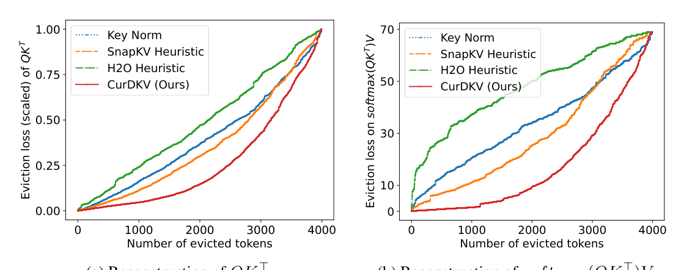
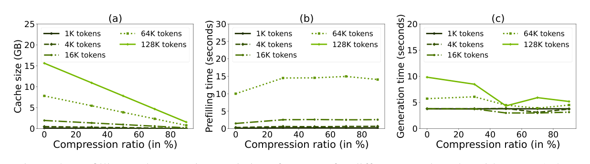

Why it matters왜 중요한가
High attention score ≠ important token. What you should preserve is the attention output, not the attention weights.
높은 어텐션 점수가 곧 중요한 토큰은 아니다. 보존해야 하는 것은 어텐션 가중치가 아니라 어텐션 출력이다.
The KV cache grows linearly with sequence length — an 8B model generating 2M tokens can need 256GB of cache. Heuristics like SnapKV and H2O rank tokens by query-key attention mass, but they ignore the value vectors that actually shape the output. The authors show theoretically (Lemma 3.1) that the output error is bounded mainly by ∥V − V′∥, and empirically that attention intensity and eviction loss are not correlated. CurDKV reframes eviction as a low-rank reconstruction of softmax(QK⊤)V using CUR decomposition — selecting real tokens (rows/columns) that best reconstruct the output.
KV 캐시는 시퀀스 길이에 선형으로 커진다 — 8B 모델이 200만 토큰을 생성하면 캐시가 256GB까지 필요하다. SnapKV·H2O 같은 휴리스틱은 쿼리-키 어텐션 질량으로 토큰을 순위 매기지만, 출력을 실제로 좌우하는 value 벡터를 무시한다. 저자들은 이론적으로(Lemma 3.1) 출력 오차가 주로 ∥V − V′∥로 상한된다는 것, 그리고 실험적으로 어텐션 강도와 eviction loss가 상관없음을 보인다. CurDKV는 eviction을 CUR 분해로 softmax(QK⊤)V를 저랭크 재구성하는 문제로 재정의하고, 출력을 가장 잘 복원하는 실제 토큰(행/열)을 선택한다.

By the numbers핵심 숫자
over SnapKV/ChunkKVSnapKV/ChunkKV 대비
평균 점수 최대 향상
(128K ctx, 80% compress)생성 지연
(128K 문맥, 80% 압축)
(SnapKV: 80.4%)Ruler NIAH 평균 @30%
(SnapKV: 80.4%)
(128K-token context)KV 캐시 @80% 압축
(128K 토큰 문맥)
(LongBench 16 + Ruler 8)평가 태스크
(LongBench 16 + Ruler 8)
(LLaMA-3.1-8B, Mistral-7B)백본
(LLaMA-3.1-8B, Mistral-7B)
Results — value-guided selection wins결과 — 값 기반 선택이 이긴다
| Budget | SnapKV | ChunkKV | CurDKV | AdaCurDKV | Δ vs SnapKV |
|---|---|---|---|---|---|
| 30% | 45.3 | 44.4 | 48.9 | 48.9 | +3.6 |
| 50% | 44.3 | 42.6 | 48.3 | 47.9 | +4.0 |
| 70% | 41.9 | 39.2 | 45.4 | 46.1 | +4.2 |
| 90% | 33.7 | 30.8 | 35.7 | 35.1 | +2.0 |
| Budget | Knorm | SnapKV | ChunkKV | CurDKV | AdaCurDKV |
|---|---|---|---|---|---|
| 30% | 71.8 | 80.4 | 87.0 | 98.7 | 97.7 |
| 90% | 13.9 | 22.0 | 32.8 | 34.7 | 39.1 |
In one diagram한 장의 그림
Idea: cast eviction as CUR low-rank reconstruction아이디어: eviction을 CUR 저랭크 재구성으로
Value-guided leverage scores
Lemma 3.1 bounds the attention-output error mainly by ∥V − V′∥. So instead of attention heuristics, CurDKV scores each token by the product of its key and value leverage scores (squared ℓ₂ norms of singular-vector rows) — the CUR notion of "how much this row defines the dominant subspace."
Lemma 3.1은 어텐션 출력 오차를 주로 ∥V − V′∥로 상한한다. 그래서 CurDKV는 어텐션 휴리스틱 대신 각 토큰의 키·값 leverage score 곱(특이벡터 행의 ℓ₂ 제곱노름)으로 점수를 매긴다 — "이 행이 지배 부분공간을 얼마나 정의하는가"라는 CUR 개념.
Random Gaussian projection
Exact SVD per layer/head is too costly, so K and V are first projected with a random Gaussian matrix (d×r) before computing leverage. This keeps relative token importance while cutting cost — and stays compatible with FlashAttention and GQA. AdaCurDKV then distributes the budget across heads by leverage mass (min-retention safeguard α=0.20).
레이어/헤드마다 정확한 SVD는 너무 비싸므로, K·V를 먼저 랜덤 가우시안 행렬(d×r)로 투영한 뒤 leverage를 계산한다. 상대적 토큰 중요도는 유지하면서 비용을 줄이고, FlashAttention·GQA와도 호환된다. AdaCurDKV는 leverage 질량으로 헤드별 예산을 배분한다(최소 유지 안전장치 α=0.20).
How it works어떻게 작동하나
- Project per group그룹별 투영For each GQA group, sample a random Gaussian matrix G (d×r, entries ~N(0,1/r)) and project Kᵢ→KᵢG, Vᵢ→VᵢG to approximate leverage cheaply.각 GQA 그룹마다 랜덤 가우시안 행렬 G(d×r, 원소 ~N(0,1/r))를 뽑아 Kᵢ→KᵢG, Vᵢ→VᵢG로 투영해 leverage를 저비용으로 근사한다.
- Compute & combine leverageleverage 계산·결합Take squared ℓ₂ norms of rows as key leverage ℓ⁽ᴷ⁾ and value leverage ℓ⁽ⱽ⁾, multiply them (ℓ⁽ᴷⱽ⁾ = ℓ⁽ᴷ⁾·ℓ⁽ⱽ⁾) to favor tokens important in both spaces, then normalize.행의 ℓ₂ 제곱노름을 키 leverage ℓ⁽ᴷ⁾·값 leverage ℓ⁽ⱽ⁾로 삼고, 둘을 곱해(ℓ⁽ᴷⱽ⁾ = ℓ⁽ᴷ⁾·ℓ⁽ⱽ⁾) 두 공간 모두에서 중요한 토큰을 강조한 뒤 정규화한다.
- Select tokens토큰 선택Preserve the first s=4 attention sinks, then take the top (k−s) tokens by combined leverage; their key/value rows form the compressed K′, V′.앞쪽 s=4개 어텐션 싱크를 보존하고, 결합 leverage 상위 (k−s)개를 선택 — 해당 키/값 행이 압축된 K′, V′를 이룬다.
- (Optional) adapt budget(선택) 예산 적응AdaCurDKV reallocates the per-layer budget across heads in proportion to their leverage-score mass, with a minimum retention fraction (α=0.20) per head — boosting head-sensitive tasks.AdaCurDKV는 레이어 예산을 헤드별 leverage 질량에 비례해 재배분하되 헤드마다 최소 유지율(α=0.20)을 둔다 — 헤드 민감 태스크에서 향상.
Efficiency in practice실전 효율
Cache memory shrinks roughly linearly with the compression ratio, and decoding speeds up because fewer cached tokens are read each step. The one cost is a modest prefill-time bump (≈10s → 14–15s at 128K) from computing leverage scores — but it plateaus past 40–60% compression.
캐시 메모리는 압축률에 거의 선형으로 감소하고, 매 스텝 읽는 캐시 토큰이 줄어 디코딩이 빨라진다. 유일한 비용은 leverage 계산에 따른 약간의 prefill 시간 증가(128K에서 약 10초 → 14~15초)인데, 40~60% 압축을 넘으면 더 이상 늘지 않는다.

What to take away그래서, 가져갈 것
Preserve the output, not the weights. Targeting softmax(QK⊤)V instead of QK⊤ yields up to +9.6% accuracy at aggressive compression — the gap widens exactly where it matters most.
가중치가 아니라 출력을 보존. QK⊤ 대신 softmax(QK⊤)V를 겨냥하니 공격적 압축에서 최대 +9.6% — 가장 중요한 영역에서 격차가 벌어진다.
Value vectors were the missing signal. Ablations confirm value-centric and key×value leverage are far more robust than key-only at 90% compression.
value 벡터가 빠진 신호였다. 어블레이션에서 90% 압축 시 값 중심·키×값 leverage가 키-only보다 훨씬 견고함이 확인된다.
Principled but deployable. Random Gaussian projection makes CUR cheap, and it stays FlashAttention/GQA-compatible — no custom kernel needed.
원리적이면서 배포 가능. 랜덤 가우시안 투영으로 CUR를 저렴하게 만들고 FlashAttention/GQA 호환 — 전용 커널 불필요.
Real latency win. Up to 40% faster generation at 128K with near-linear memory savings — a genuine speed-accuracy trade for long contexts.
실질적 지연 개선. 128K에서 생성 최대 40% 가속 + 거의 선형 메모리 절감 — 긴 문맥용 진짜 속도-정확도 트레이드.